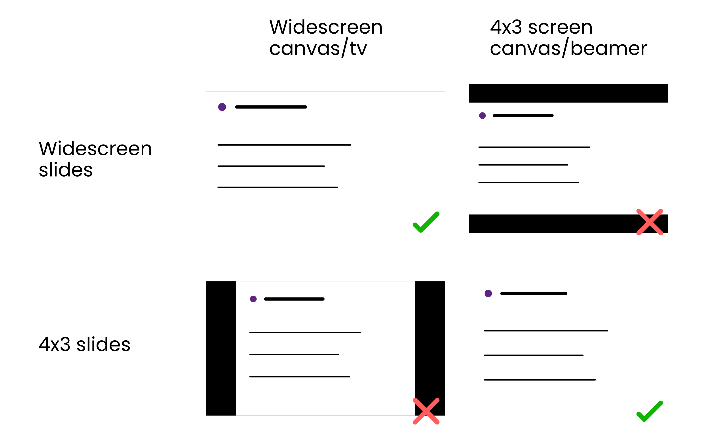

Design Matters
a rant by daniel roelfs
literally any poster session ever
Slide title
Slide 1
<basic design principles>
Chapter 1
Scientific posters
I don't want to talk about scientific posters
Poster sessions suck
Resources
- Nguyen Gobber - How to Design Scientific Posters?
(presentation from graphic designers on improving scientific posters, with general rules) - Dirma Janse - The Science Poster Design Guide
(book + website created by graphic designer) - Mike Morrison - How to create a better research poster in less time
(YouTube video on UX of poster sessions (~20mins) + templates, also this paper)
Chapter 2
"I don't care about design"
- No one ever"But whether something is nice or pretty is subjective!"
Art can be subjective, but design is either good or bad at serving a purpose
and the ability to serve its purpose can be measured
and the ability to serve its purpose can be measured
"So I should care about design, but why invest time in making it look pretty too"
People like looking at pretty things
Case in point: the entire field or marketing, advertising, interior design, ...
Which do you want in your house?
Which looks more appealing?


Which looks more trustworthy?
What about these?
ggplot styleWe'll go over how to go from left to right later
ggplot theme (source)Efficient communication
Science interacts with
- Educators
- Journalists
- Policymakers
- etc.
- Journal editors
- Reviewers
- Grant agencies
Why does it matter?
- Academics are people too, people like looking at nice things
- Good and clear figures or illustrations are part of science communication
- People remember visuals better than text
- Succeeding at explaining 1 thing > failing to explain 10 things
Low cost, low reward
High cost, high reward
Chapter 3
Presentations
- More people will see your presentations than your posters
- More people you care about will see your presentations
- Presentations have higher return on investment
- So let's talk about how to improve presentations
Be nice to your scientist

Illustrations
Replace text with illustrations wherever you can
Illustrations
- Time spent is an investment
- Provides visual aid to explain complex concepts and methods
- Can be reused for manuscripts and grant applications
Illustrations improve grant applications

Take it to the next level

|
PowerPoint | free at university, frustrating |
|
|
InkScape | free, open source, not great |
|
|
Adobe Illustrator Adobe InDesign |
$$$, free at university virtual desktop |


|
Affinity Designer Affinity Publisher |
$, lifetime license |
Aspect ratio
Maximize the space available

"1 minute per slide" is outdated
Margins
Alignment
- Be more lazy
- Keep it simple, stupid
- Less is more

Chapter 4
The devil is in the details
Case study: typefaces & fonts
Arial sucks
Arial üëé
Poppins üëç
Context matters
Typeface sends a message

Choose wisely
Best of Google Fonts
- Open Sans
- Roboto
- Poppins (body font for this presentation )
- Lato (header font for this presentation)
- Alegreya
- Montserrat
- Raleway
- Merriweather
Every letter you've ever read is the consequence of a design choice
...except if you read Arial or Helvetica (also Calibri or Verdana)
The devil is in the details
Chapter 5
Colors are complicated


Chapter 6
Figures (with code üëç)
How do I read a paper?
- Skim the paper
- Look at the figures
- Read the abstract
- Read the results and conclusion
- Read the entire paper
- Figures draw readers into a manuscript
- Figures are re-usable
- Scripts to create figures are re-usable
- Creating nice figures for your manuscript is an investment
how to use scientific colors in {ggplot2}
library(normentR)
penguins %>%
ggplot(aes(x = bill_length_mm, y = body_mass_g,
color = species)) +
geom_point(size = 2) +
scale_color_norment(discrete = TRUE,
palette = "batlow") +
theme_norment(base_size = 9)
library(scico)
penguins %>%
ggplot(aes(x = bill_length_mm, y = body_mass_g,
color = species)) +
geom_point(size = 2) +
scale_color_scico_d(palette = "batlow") +
theme_minimal(base_size = 9)
theme_minimal() is your friend
penguins %>%
ggplot(aes(x = bill_length_mm, y = body_mass_g,
color = species)) +
geom_point(size = 2) +
scale_color_norment(discrete = TRUE,
palette = "batlow") +
theme_minimal()
My setup
### CREATE SCATTER PLOT ########################
#-- Libraries -------------------------
library(tidyverse)
library(ggtext)
library(scico)
library(patchwork)
#-- Load data ------------------------
...
My setup
### RUN XGBOOST ANALYSIS ########################
# -- Libraries -------------------------
import numpy as np
import pandas as pd
import matplotlib.pyplot as plt
# -- Load data -------------------------
...
data %>%
ggplot(aes(x = gdpPercap, y = lifeExp,
size = pop)) +
geom_point(aes(color = continent)) +
geom_smooth(method = "lm") +
scale_x_log10()
data %>%
ggplot(aes(x = gdpPercap, y = lifeExp,
size = pop)) +
geom_point(aes(color = continent)) +
geom_smooth(method = "lm", show.legend = FALSE) +
scale_x_log10() +
theme_minimal() +
theme(panel.grid = element_line(colour = "grey90"))
data %>%
ggplot(aes(x = gdpPercap, y = lifeExp,
size = pop)) +
geom_point(aes(color = continent), alpha = 0.5, stroke = 0) +
geom_smooth(method = "lm", color = "grey30",
alpha = 0.15, show.legend = FALSE) +
labs(title = "Relation between GDP and life expectancy",
x = "GDP per capita",
y = "Life expectancy",
color = "Continent",
size = "Population") +
scale_x_log10() +
scale_color_scico_d(palette = "batlow") +
scale_size_continuous(range = c(1,15), labels = scales::label_number(),
guide = guide_legend(label.position = "bottom") +
theme_minimal() +
theme(plot.title = element_markdown(size = 14),
legend.box = "vertical",
legend.position = "bottom",
panel.grid = element_line(colour = "grey90")
)
{ggplot2} theme() options (based on a gist by Emily Riederer)
ggplot(data, aes(x = x, y = y, col = as_factor(x))) +
geom_point(size = 5) +
labs(title = "test title",
subtitle = "test subtitle",
x = "my x axis",
y = "my y axis",
caption = "this is a caption",
col = "Renamed Legend") +
facet_grid(w ~ z, switch = "y") +
theme(
plot.background = element_rect(fill = "lightyellow"),
plot.title = element_text(size = 30, hjust = 0.25),
plot.subtitle = element_text(size = 20, hjust = 0.75, color = "mediumvioletred", family = "serif"),
plot.caption = element_text(size = 10, face = "italic", angle = 25),
panel.background = element_rect(fill = "lightblue", colour = "darkred", size = 4),
panel.border = element_rect(fill = NA, color = "green", size = 2),
panel.grid.major.x = element_line(color = "purple", linetype = 2),
panel.grid.minor.x = element_line(color = "orange", linetype = 3),
panel.grid.minor.y = element_blank(),
axis.title.x = element_text(face = "bold.italic", color = "blue"),
axis.title.y = element_text(family = "mono", face = "bold", size = 20, hjust = 0.25),
axis.text = element_text(face = "italic", size = 15),
axis.text.x.bottom = element_text(angle = 180), # note that axis.text options from above are inherited
strip.background = element_rect(fill = "magenta"),
strip.text.y = element_text(color = "white"),
strip.placement = "outside",
legend.background = element_rect(fill = "orangered4"), # generally will want to match w plot background
legend.key = element_rect(fill = "orange"),
legend.direction = "horizontal",
legend.position = "bottom",
legend.justification = "left",
legend.title = element_text(family = "serif", color = "white"),
legend.text = element_text(family = "mono", face = "italic", color = "limegreen")
)
One quick word on file organization
$ pwd
/Users/dtroelfs/Dropbox/NORMENT/r_scripts/ica_genetics
$ tree
./
├── convert_pleio_results.m
├── compare_ic_modelorders.R
├── create_fuma_table.R
├── create_manhattan_figure.R
├── extract_pleio_qq_data.ipynb
├── extract_ukb_questionnaire_fields.R
├── figures/
│   ├── ica_weightmatrix.png
│   ├── ic_heritability.png
│   ├── ic_manhattan_plots.png
│   ├── icxic_ldsc_matrix.png
│   └── questionscores_distribution.png
├── files/
│   ├── fuma_job_names.txt
│   ├── ica_loadings.txt
│   ├── ldsc_stats.txt
│   ├── question_definitions.txt
│   └── sumstats/
│ ├── GWAS_ICA_1.sumstats.gz
│ └── GWAS_ICA_2.sumstats.gz
├── ica_genetics.Rproj
├── plot_heritability.R
├── plot_ica_weight_matrix.R
├── plot_icxic_ldsc_matrix.R
└── plot_questionnaire_scores.R
3 directories, 21 files
… on coding style
### PLOT ICA WEIGHT MATRIX ########################
#-- Libraries -------------------------
library(tidyverse)
#-- Load data ------------------------
data <- read_csv("files/ica_loadings.txt") %>%
janitor::clean_names()
#-- Wrangle data ------------------------
data <- data %>%
mutate(diagnosis = str_to_upper(diagnosis))
#-- Create plot ------------------------
data %>%
pivot_longer(cols = starts_with("ic"), names_to = "ic", values_to = "loading") %>%
mutate(ic = fct_reorder(ic, parse_number(ic))) %>%
ggplot(aes(x = ic, y = question, fill = loading)) +
geom_tile()
Epilogue
Some basic rules for better design
KISS
Keep It Simple, Stupid

Color scheme
When in doubt, go for greyscale
e.g.
- Black on white (when presenting in a bright room)
- Light grey on black (when presenting in a darkened room)
Fonts
Don't use Comic Sans or Arial, ever!
List of good and bad fonts (from Butterick's Practical Typography)
Line length

Dynamic figure design
Presenting on Zoom
Don't use 4x3 aspect ratio when presenting on Zoom
Black bars on either side when the slideshow doesn't match screen size
NORMENT template
The original NORMENT template is outdated
Link to the new templates. Disclaimer: I created the new NORMENT template
Abstraction
Get rid of everything that doesn't aid in delivering the message

Abtract-o-meter to illustrate concept of abstraction by designer Christopher Niemann
Priorities
Data goes before aesthetics
Final rule
Trust your gut
Resources
- Fabio Crameri - Scientific Color maps (+ paper)
- Thomas Lin Pedersen -
{scico}(R package with scientific color maps) - Yan Holtz - From Data to Viz (decision tree for figure format, + R code)
- John Burn-Murdoch - Reporting on and visualising the pandemic (talk on wrapping messages in figures)
- Cédric Scherer - Visualizing Distributions with Raincloud Plots (
{ggplot2}-based tutorial) - Lisa Charlotte Muth - Which color scale to use when visualizing data (part of 4-part series for Datawrapper)
- Lisa Charlotte Muth - An alternative to pink & blue: Colors for gender data (for Datawrapper)
- Nguyen Gobber - How to Design Scientific Posters? (pdf)
- Dirma Janse - The Science Poster Design Guide (book + website)
- Butterick's Practical Typography (online guide to everything you need to know about typography)
- Abstract - The Art of Design (Netflix series, particularly the ones on graphic design and typography are interesting)
- Slidesgo.com (free Powerpoint templates. They're not all good but they can serve as inspiration)
- Slides.com (web-based alternative to Powerpoint)
- reveal.js (same software as above but CLI. More functionality, but steep learning curve, used for these slides)
Design in this presentation
Get creative